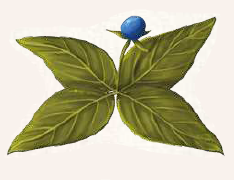

Die vierblättrige Einbeere ist eine bekannte Heilplanze, die an Waldrändern und Wäldern überall in Nord- und Mittelaventurien wächst. Wer zu viel von der Einbeere einnimmt, kann danach süchtig werden.

Suchschwierigkeit: -3
Bestimmungsschwierigkeit: -2
Anwendungen: 1/1/2/2/3/3
Wirkung:
Roh:
Berührung: keine
Einatmung: keine
Verzehr: Pro Anwendung 2 LeP zusätzlich bei der nächsten Regeneration, maximal jedoch 4 pro Regenerationsphase zusätzlich.
Wer 2 oder mehr Anwendungen innerhalb eines Tages einnimmt, wird nach Einbeeren süchtig und verliert 1W6 LeP pro Woche, wenn er nicht mindestens 1 Anwendung pro Woche einnimmt.
Verarbeitet: siehe Rezepte
Preis: 6 / 7 Silbertaler
Rezepte:
Elixiere: Schlaftrunk
Haltbarkeit:
Roh: siehe Haltbarmachung